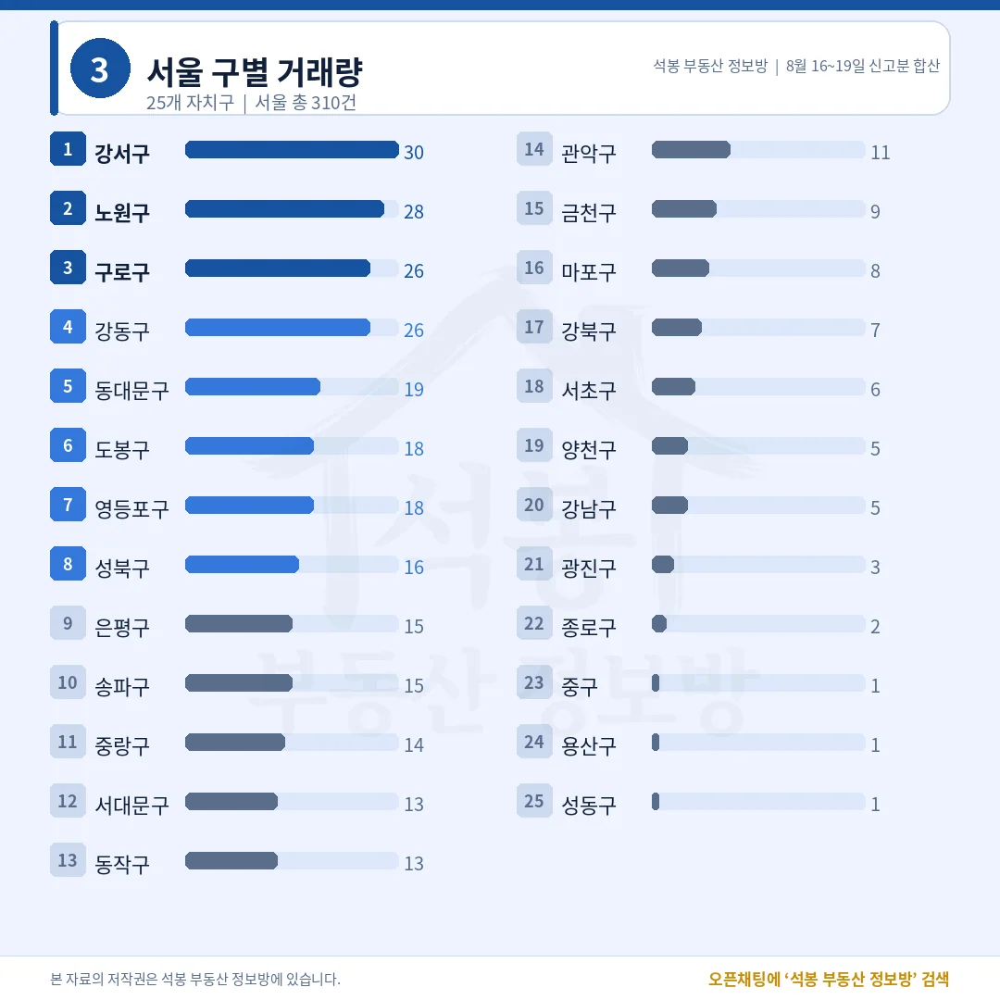
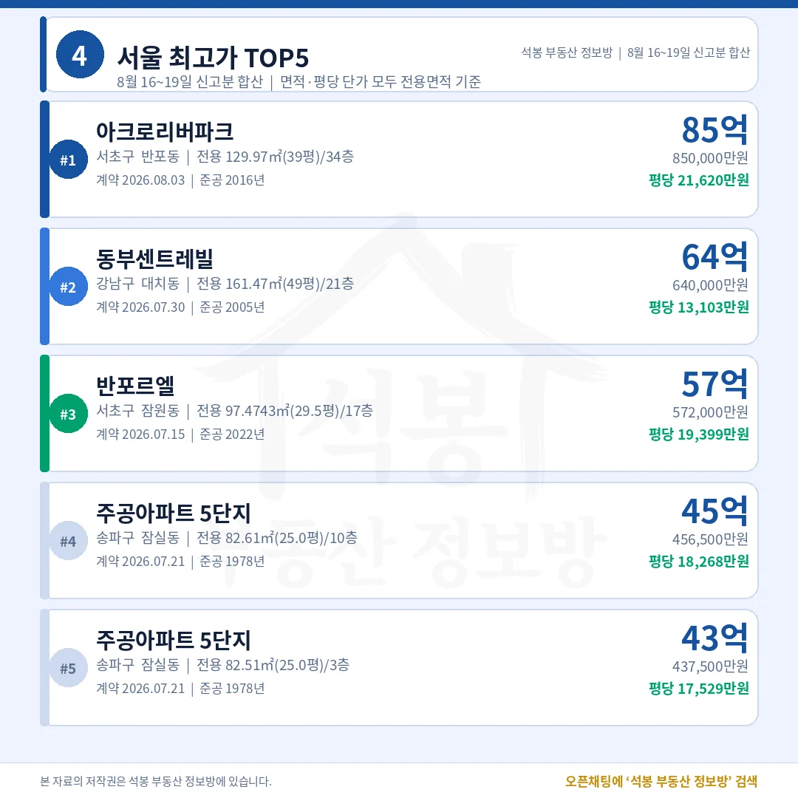
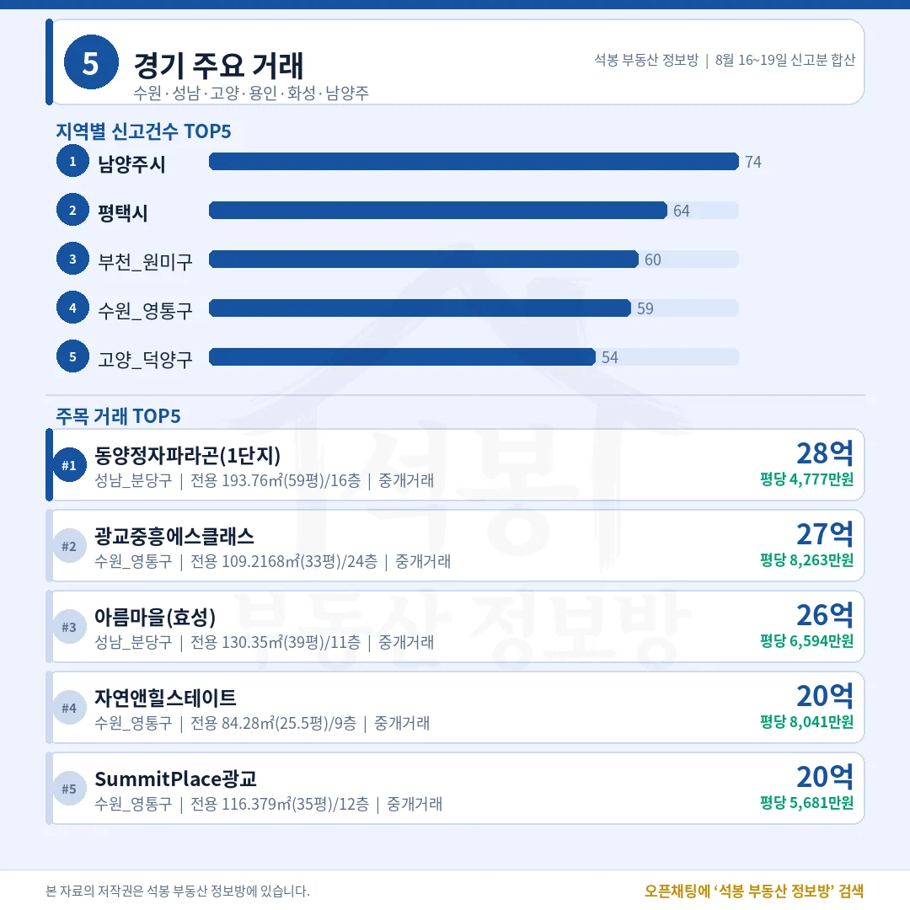
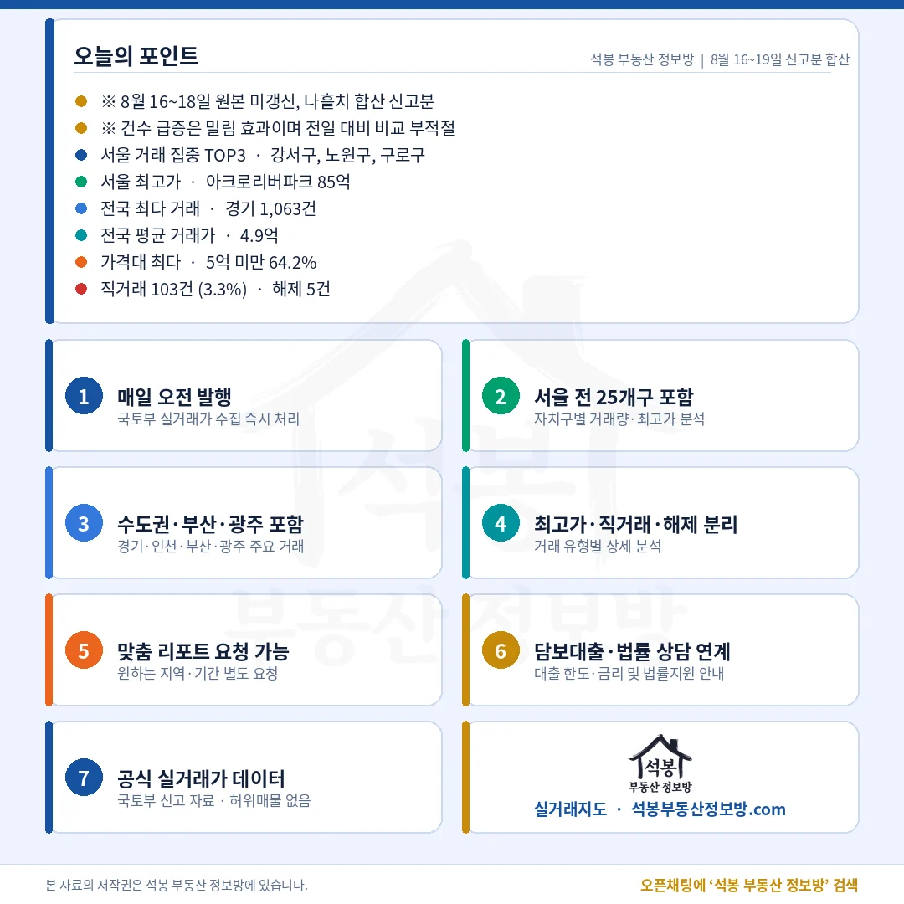

8월 19일 자료는 하루치가 아닙니다. 8월 16일부터 18일까지 사흘간 국토교통부 원본이 갱신되지 않았고, 그 몫이 8월 19일에 한꺼번에 들어왔습니다. 그래서 3,109건은 8월 16일~19일 나흘치 신고분 합산입니다. 건수를 전날과 비교하는 건 의미가 없으니, 비중과 중위값, 최고가 위주로 보시면 됩니다. 눈에 띄는 건 직거래 비중이 3.3%까지 내려온 대목입니다.
비중은 전체 신고 3,109건 기준(해제분 포함). 8월 12일~15일 직거래 비중은 6.9%, 7.1%, 6.9%, 7.7%였습니다.
가격 구간
건수
비중
누적 비중
5억 미만
1,995건
64.2%
64.2%
5억~10억
841건
27.1%
91.2%
10억~15억
182건
5.9%
97.1%
15억~20억
57건
1.8%
98.9%
20억 이상
34건
1.1%
100.0%
열 건 중 아홉 건이 10억 아래입니다. 전국 중위 거래가는 3.9억.
여기서부터는 회원에게 보여드립니다
카카오 로그인 3초면 전문을 읽을 수 있습니다. 무료입니다.
가입하시면 지역 시장조사 보고서(약식)를 2회 무료로 요청하실 수 있습니다.
이미 회원이면 같은 버튼으로 로그인만 됩니다
경기 1,063건에 서울 310건, 수도권이 51.0%

서울 구별 거래량
경기가 3분의 1을 차지했고, 수도권 세 곳을 합치면 1,586건으로 절반을 갓 넘겼습니다.
순위
시도
건수
비중
중위가
1
경기
1,063건
34.2%
4.97억
2
서울
310건
10.0%
9.55억
3
인천
213건
6.9%
4.20억
4
경남
198건
6.4%
2.62억
5
부산
187건
6.0%
3.70억
6
경북
151건
4.9%
1.85억
중위가는 해제분 3,104건 기준. 서울과 경북 사이가 5배 넘게 벌어집니다.
자치구
건수
중위가
비고
강서구
30건
10.80억
최다 단지 3건(10.0%)
노원구
28건
7.18억
최다 단지 3건(10.7%)
구로구
26건
7.09억
최다 단지 2건(7.7%)
강동구
26건
15.40억
롯데캐슬퍼스트 4건(15.4%)
동대문구
19건
10.55억
최다 단지 2건(10.5%)
도봉구
18건
5.44억
주공17단지 3건(16.7%)
한 단지가 몰아서 신고된 흔적은 없습니다. 가장 쏠린 도봉구도 16.7%로, 공공기관 일괄매입이 끼면 나타나는 패턴과는 거리가 있습니다.
서울 최고가 아크로리버파크 85억, 평당 2억 1,620만원

서울 최고가 TOP5
1위와 2위의 평당가가 8,500만원 넘게 벌어졌습니다. 총액 순서와 평당 순서가 그대로 가지 않습니다.
순위
단지
위치
거래가
전용면적
평당
1
아크로 리버파크
서초구 반포동
85억
130㎡ (39.3평)
21,620 만원
2
동부 센트레빌
강남구 대치동
64억
161㎡ (48.8평)
13,103 만원
3
반포르엘
서초구 잠원동
57.2억
97㎡ (29.5평)
19,399 만원
4
주공아파트 5단지
송파구 잠실동
45.7억
83㎡ (25.0평)
18,268 만원
5
주공아파트 5단지
송파구 잠실동
43.8억
83㎡ (25.0평)
17,529 만원
면적·평당 단가 모두 전용면적 기준. 4위와 5위는 같은 단지 같은 날(7월 21일) 계약분입니다.
경기 남양주 74건, 비수도권 상단은 부산 엘시티 24.7억

경기·인천·부산·광주
지역마다 상단이 열 배 넘게 벌어집니다. 경기 28억, 부산 24.7억, 인천 15억, 광주 15.3억.
지역
건수
중위가
최다 신고
최고가 거래
경기
1,063건
4.97억
남양주 74건
동양정자파라곤 성남 정자동 28억
인천
213건
4.20억
연수구 47건
더샵송도프라임뷰 연수구 송도동 15억
부산
187건
3.70억
부산진구 27건
엘시티 해운대구 중동 24.7억
광주
90건
2.67억
북구 31건
한국아델리움1단지 남구 봉선동 15.3억
부산 엘시티는 평당 5,041만원(전용)으로, 같은 해운대 안에서도 인근 단지의 세 배 수준입니다. 경기 상단인 성남 분당·수원 영통은 20억 위 6건을 나눠 가졌습니다.
20억 위 34건 가운데 송파가 11건, 강남·서초를 합친 7건보다 많습니다

고가 구간의 무게중심이 잠실 쪽에 실렸습니다. 15억 위로 넓혀도 91건 중 70건이 서울입니다.
구분
20억 이상
15억 이상
서울 비중
전국
34건
91건
해당 없음
서울
27건
70건
79.4%
송파구
11건
해당 없음
32.4%
강남·서초
7건
해당 없음
20.6%
경기
6건
해당 없음
해당 없음
서울 비중은 20억 이상 34건 기준.
송파가 강남·서초를 앞선 배경에는 잠실 주공아파트 5단지가 있습니다. 이 단지 하나에서만 45.7억, 43.8억, 40.3억이 나왔고 셋 다 20억 구간에 들어갔습니다. 8월 16일 원고에서 짚어 드렸던 것처럼 재건축 진행 단계가 값에 먼저 반영되는 구간이라, 준공 1978년 단지가 평당 1억 8,268만원을 받는 장면이 반복되고 있습니다.
직거래 3.3%도 기록해 둘 만합니다. 최근 나흘은 6.9%에서 7.7% 사이를 오갔는데 8월 19일 신고분은 그 절반이 채 안 됩니다. 다만 이번 자료가 나흘치를 합친 것이라 특정 하루의 움직임으로 읽기는 어렵고, 중개를 낀 거래가 상대적으로 더 많이 밀려 들어왔을 가능성도 함께 놓고 봐야 합니다. 비중 하나만으로 시장이 바뀌었다고 보기에는 이른 숫자입니다.
· 이 자료는 2026년 8월 16일~19일 신고분 합산입니다(8월 16일~18일 국토교통부 원본 미갱신분이 8월 19일에 함께 반영). 건수의 전일 대비 증감은 의미가 없습니다. · 직거래는 공인중개사를 끼지 않고 당사자끼리 신고한 거래입니다. 면적·평당 단가는 전용면적 기준이며 평은 ㎡를 3.305785로 나눈 값입니다. · 중위가는 금액순 한가운데 값으로 해제분 5건을 뺀 3,104건 기준, 건수·비중은 해제분을 포함한 3,109건 기준입니다. · 억 단위는 소수 첫째 자리까지 적었습니다.
원자료: 국토교통부 아파트 매매 실거래가 공개시스템 · 2026년 8월 16일~19일 신고분 합산 3,109건(해제분 5건 포함) · 기준일 2026년 8월 19일 편집·제작: 석봉 부동산 정보방 · 본 자료는 정보 제공 목적이며 투자 권유가 아닙니다.